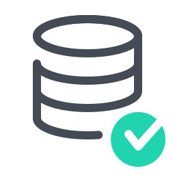

DatabaseMateri Belajar Database SQL dan NO SQLDefinisi DatabasePengertian Database ModelPengertian Relational ModelRDBMS : Relational Database Management SystemsMySQL sebagai RDBMSTugas 1 MySQLDatabase, Attribute dan TupleCandidate Key, Primary Key dan Foreign KeyReferential IntegrityStructured Query Language (SQL)Tugas 2 MySQLInstalasi XAMPP, MYSQL dan MariaDBMenjalankan MYSQL ClientTugas 3 MySQLAturan Penulisan Query MySQLMembuat dan Menghapus DatabaseMenambahkan Data ke TabelMengubah Data di TabelMenghapus Data TabelMenampilkan Data TabelTugas 4 MySQLCharacter set dan Collation di dalam MySQLTipe Data MySQLTugas 5 MySQLFormat Dasar CREATE TABLECREATE TABLE ... IF NOT EXISTCREATE TEMPORARY TABLECREATE TABLE ... LIKECREATE TABLE ... SELECTCREATE TABLE CLONINGTabel Character Set dan CollationTabel Option Auto IncrementTable Option CommentALTER TABLEALTER TABLE ... RENAMEALTER TABLE ... MODIFYALTER TABLE ... CHANGEALTER TABLE ... ADD COLUMNALTER TABLE … DROP COLUMNSDROP TABLETugas 6 MySQLINSERT ... VALUEINSERT ... SETINSERT ... SELECTON DUPLICATE KEY UPDATETugas 7 MySQLSelect .. select_expressionSelect .. FROMSelect .. ASSelect… ORDER BYSelect .. LIMITSelect .. WHERESelect .. WHERE table1 = table2Select .. WHERE ... INSelect .. ANY, SELECT .. SOME, SELECT ... ALLSelect .. EXISTSSelect .. WHERE ... BETWEENSelect .. WHERE ... LIKESelect .. UNIONSelect .. DISTINCTSelect .. JOINTugas 8 MySQLUpdate Data TabelReplace Data TabelDelete Data TabelTruncate Data TabelTugas 9 MySQLImport Data dengan LOAD DATA INFILELOAD DATA LOCAL INFILELOAD DATA INFILE … FIELDS TERMINATED BYLOAD DATA INFILE … LINES TERMINATED BYLOAD DATA INFILE … FIELDS ENCLOSED BYLOAD DATA INFILE … IGNORE LINESLOAD DATA INFILE … LINES STARTING BYLOAD DATA INFILE REPLACE IGNORELOAD DATA INFILE Col1, Col2, Col3 ...Import Data dari File CSVExport Data dengan SELECT INTO OUTFILEExport Data dengan MysqldumpImport Data dengan MysqldumpTugas 10 MySQLPembuatan User & Hak Akses (Privilege)Cara Login ke MySQL ServerMembuat User PrivillegeMembuat User dengan Batasan HostMembuat User dengan PasswordMengenal Hak Akses(Privilege)Menghapus Hak Akses (Privilege)Hak Akses untuk Seluruh Tabel dan DatabaseHak Akses WITH GRANT OPTIONTugas 11 MySQLMySQL ViewMembuat dan Menghapus VIEWVIEW untuk JOIN dan Penambahan DataUpdate data dari VIEWKonsistensi Update VIEW dengan WITH CHECK OPTIONTugas 12 MySQLMySQL Stored Procedure dan Stored FunctionMembuat Stored ProcedureMenghapus Stored ProcedureIF StatementIF ELSE StatementIF ELSEIF ELSE StatementSimple CASE StatementComplex CASE StatementWHILE Loop StatementRepeat LoopStored FunctionTugas 13 MySQLPengertian TriggerFormat Dasar Penulisan TriggerMembuat TriggerImplisit Event TriggerMenghapus TriggerBefore atau After Trigger?Tugas 14 MySQLPengertian PHPMyAdminKelebihan dan Kekurangan PHPMyAdminMengakses PHPMyAdminMembuat Database dan Tabel di PHPMyAdminMengisi Data Tabel di PHPMyAdminMenampilkan Isi Tabel di PHPMyAdminMenjalankan Kode SQL di PHPMyAdminTugas 15 MySQLStudy Kasus MySQLInstalasi MongoDBInput Data MongoDBUpdate Data MongoDBPencarian dan Menampilkan Data MongoDBDelete Data MongoDBTugas 16 MySQLSTUDY KASUS MONGODB